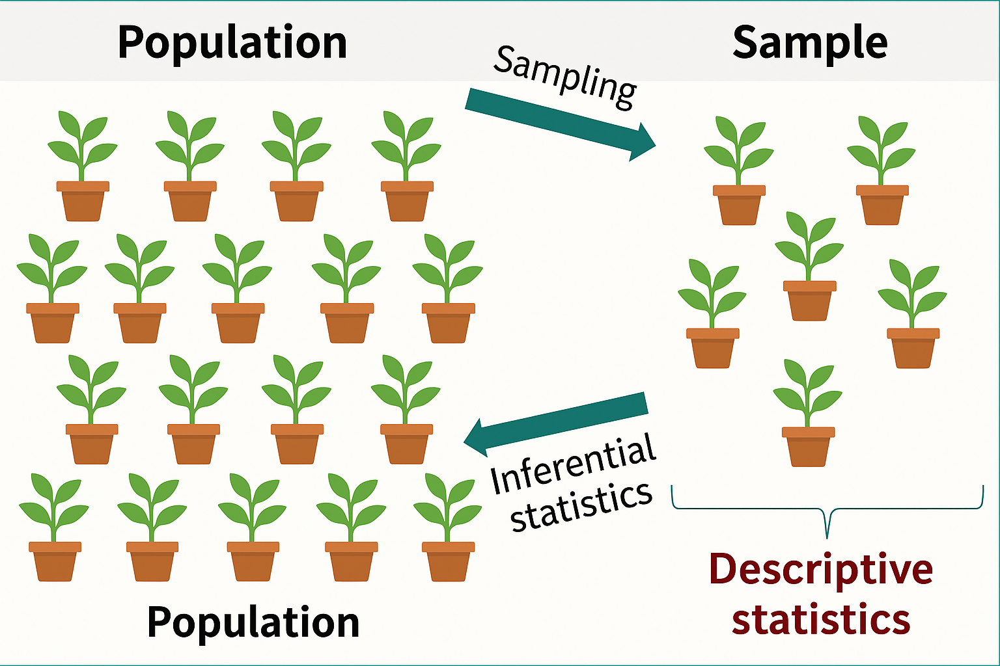
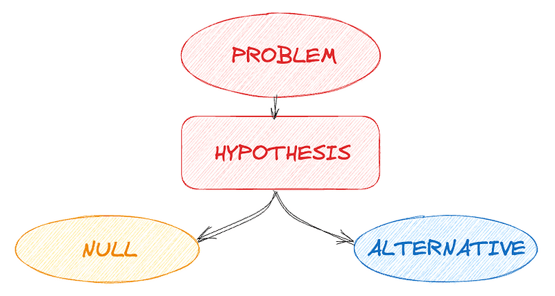
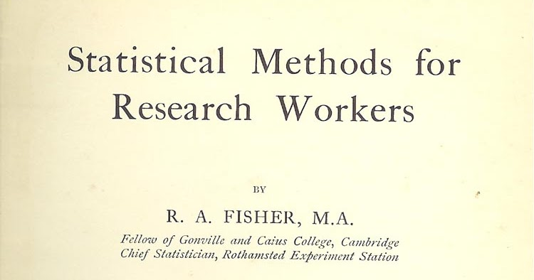
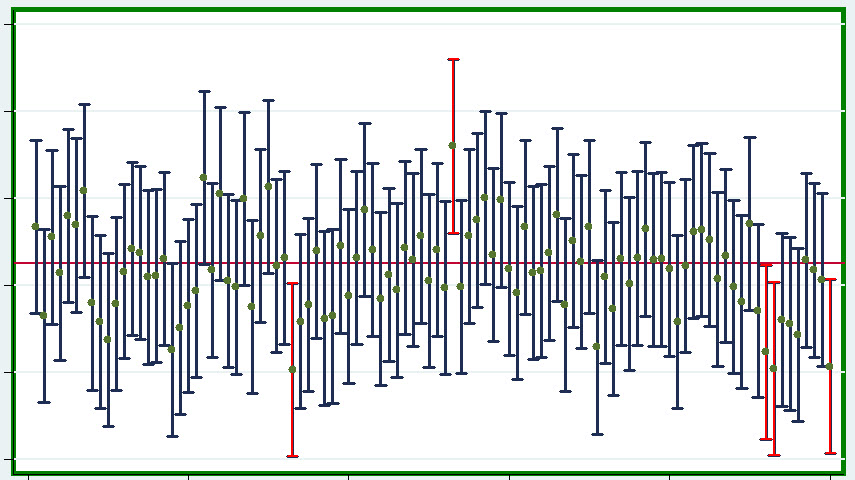
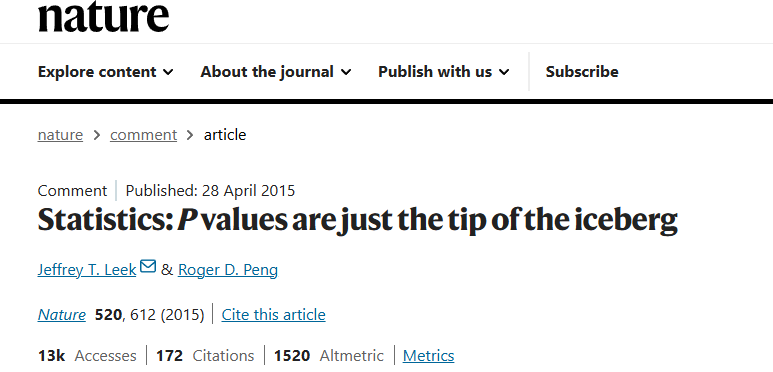
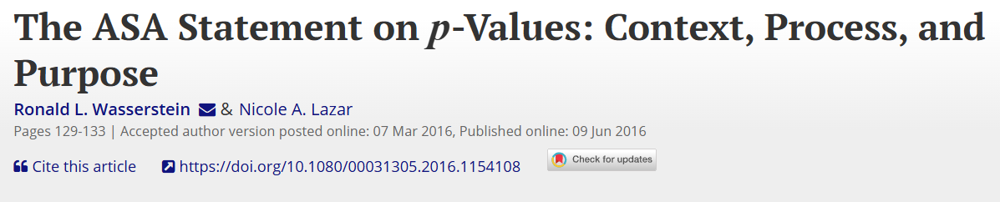
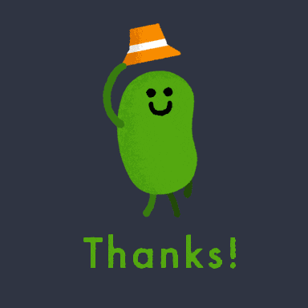

Valor P e Intervalos de Confianza (IC)
Diseño Experimental
2025-10-08
Inferencia

El problema: Inglaterra, 1919
Rothamsted Experimental Station
- Estación agrícola más antigua del mundo (1843)
- Décadas de datos de experimentos agrícolas acumulados
- Pregunta central: ¿Cómo decidir objetivamente si un tratamiento funciona?
Ronald Fisher (1890-1962)
- Contratado en 1919 para analizar datos históricos
- Desarrolló ANOVA y diseño experimental moderno
- Creador de la estadística aplicada moderna
La solución: Hipótesis Nula (H₀)
- H₀: La posición por defecto, el “no pasa nada”
- “No hay diferencia entre tratamientos”
- “El efecto es cero”
- Lo que queremos refutar con datos
- H₁: La hipótesis alternativa
- “Sí hay diferencia”
- “El tratamiento tiene efecto”

El Valor P (1925)
“Statistical Methods for Research Workers”
“¿Qué tan probable es observar estos datos (o más extremos) si H₀ fuera cierta?”
- Un índice de evidencia continuo
- NO una regla de decisión automática
- Cuanto menor el p, más evidencia contra H₀

Interpretando el Valor P
- p < 0.001: muy improbable bajo H₀ → fuerte evidencia de efecto
- p = 0.40: bastante probable bajo H₀ → poca evidencia
⚠️ El valor p NO es:
- La probabilidad de que H₀ sea verdadera
- La probabilidad de error
Jerzy Neyman (1894-1981)
- Matemático polaco, años 1930s
- Propuso los Intervalos de Confianza (1934-1937)
- Filosofía diferente: procedimientos de decisión a largo plazo
La limitación del valor p
El valor p responde: ¿Hay evidencia de efecto?
NO responde:
- ¿Qué tan grande es el efecto?
- ¿Qué valores son plausibles?
- ¿Cuál es mi incertidumbre?
Necesidad: cuantificar incertidumbre constructivamente
Intervalos de Confianza
De estimación puntual a intervalo:
- Puntual: β = 150
- Intervalo 95%: [135, 165]
Interpretación correcta:
“El 95% de intervalos construidos capturarían el valor verdadero”
⚠️ NO: “95% de probabilidad de que β esté ahí”
Visualización de IC
100 experimentos repetidos - IC del 95%
- ~95 intervalos capturan el valor verdadero
- ~5 intervalos fallan
- El parámetro es fijo, el intervalo es aleatorio

Fisher vs Neyman
Resultado: enemistad que duró décadas
Ambos enfoques aportan, ninguno es “el correcto”
Fisher
Evidencia continua, flexible
Neyman
Procedimientos de decisión, propiedades a largo plazo
El problema de p = 0.05
- Neyman lo propuso para decisiones urgentes
- Se universalizó incorrectamente como regla absoluta
- p = 0.049 vs p = 0.051 no tienen diferencia práctica
- El umbral es arbitrario
Problemas modernos
- P-hacking: manipular análisis para p < 0.05
- HARKing: inventar hipótesis después de ver resultados
- Sesgo de publicación: solo se publica lo “significativo”
- Crisis de replicación: muchos hallazgos no se replican

Declaración ASA (2016)
American Statistical Association:
- El valor p NO mide si H₀ es verdadera
- NO indica tamaño del efecto
- NO es buena medida de evidencia por sí solo
- Cruzar p = 0.05 no significa “verdad”
Las decisiones científicas requieren más que valores p

Recomendación: enfoque integrado
- Contexto del dominio
- Visualización de datos y ajuste de modelos
- Intervalos de confianza
- Tamaño del efecto
- Valor p (como índice, no como regla)
Ninguna métrica cuenta toda la historia
Consideraciones importantes
- Valor p = índice de evidencia, no verdad
- IC = cuantificación de incertidumbre
- p = 0.05 es arbitrario
- Siempre reportar tamaño del efecto e IC
- Contexto y relevancia práctica son fundamentales
- La estadística es una herramienta instrumental, no tiene caracter ontológico
¡Gracias!
